데이터 시각화 · 작품 분석 · 내용 정리
점 하나가 사람 한 명
존 스노의 콜레라 점 지도(1854)를 터프티의 『시각적 설명』을 따라 읽는다. 발표자료를 만들기 전 단계의 내용 정리 문서다.
같이 보는 자료 — 눌러서 바로 열립니다 (③④는 맨 아래 응용 절에)
Ⅰ이 지도는 누가 그렸나
터프티의 책에 실려 있지만, 터프티가 그린 지도가 아니다
그린 사람은 존 스노
가장 헷갈리기 쉬운 점 — 터프티는 그린 사람이 아니다
에드워드 터프티(Edward Tufte, 1942~ )는 미국 예일대 교수다. 그가 한 일은 잘 만든 그림과 못 만든 그림을 모아 놓고 "이건 왜 좋은가"를 설명하는 책을 다섯 권 쓴 것이다. 그러니까 그는 남이 그린 그림을 모아서 평가하는 사람이다.
우리가 발표할 콜레라 지도를 그린 사람은 존 스노(John Snow)다. 터프티가 직접 손댄 것은 딱 하나 — 구빈원과 양조장 두 곳에 노란색을 칠해 눈에 띄게 한 것뿐이다.
그래서 발표에서 말할 때는 "터프티의 지도"가 아니라 "존 스노가 1854년에 그린 콜레라 지도 — 터프티의 책 『시각적 설명』 31쪽에 실려 있다"고 말한다.
그럼 존 스노는 누구인가
| 언제 사람인가 | 1813~1858년, 그때 런던에 살던 의사다. 나중에 역사책을 들춰 보고 정리한 사람이 아니라, 콜레라가 터진 그 동네에 직접 있던 사람이다. |
| 무슨 일을 했나 | 의사였다. 특히 수술할 때 환자를 잠들게 하는 마취(수술 중 아픔을 못 느끼게 하는 것)를 잘하기로 유명해서, 빅토리아 여왕이 아이를 낳을 때도 불려 갔다. |
| 왜 그렸나 | 사람을 살리려고 그렸다. 콜레라가 터진 바로 그때, 원인을 찾으려고 집집마다 찾아다니며 "누가 언제 죽었나, 어느 펌프 물을 마셨나"를 직접 묻고 그 자리를 지도에 하나씩 찍었다. |
| 언제 그렸나 | 1854년 8~9월 유행이 한창일 때 조사하고, 1855년에 낸 자기 책에 이 지도를 실었다. |
정리하면 — 이 지도는 보고서용 그림이 아니라, 범인을 잡으려고 만든 증거물이다. 그 점이 이 지도를 특별하게 만든다.
터프티의 다섯 권 — 한 줄씩
터프티는 40년에 걸쳐 다섯 권을 냈다. 권마다 묻는 질문이 다르다. 우리가 볼 지도는 3권 『시각적 설명』 2장, 31쪽에 있다.
| 권 | 책 | 묻는 질문 |
|---|---|---|
| 1 | 정량적 정보의 시각적 표현 1983 |
숫자를 어떻게 그릴 것인가 |
| 2 | 정보의 시각화 1990 |
납작한 종이 한 장에 여러 가지를 한꺼번에 어떻게 담을 것인가 |
| 3 | 시각적 설명 1997 — 우리가 쓰는 책 |
왜 그렇게 됐는지(원인)를 어떻게 보여줄 것인가 → 콜레라 지도 |
| 4 | 아름다운 증거 2006 |
무엇이 그림을 증거로 만드는가 |
| 5 | 새로운 눈으로 보기 2020 |
익숙해진 그림 방식을 어떻게 다시 설계할 것인가 |
Ⅱ1854년 런던에서 무슨 일이 있었나
지도를 보기 전에 알아야 할 배경
열흘 만에 500명
1854년 8월 31일 밤, 런던 한복판 소호(Soho — 런던 시내 한가운데에 있는 동네. 당시에는 좁은 골목에 집이 다닥다닥 붙어 있고 가난한 노동자가 빽빽하게 살던 곳이었다. 지금은 극장과 식당이 많은 번화가다)에서 콜레라(물이나 음식으로 옮는 병. 심한 설사로 몸의 물이 빠져나가 하루 만에도 죽을 수 있다)가 터졌다.
설사를 시작한 사람이 하루 만에 죽어 나갔다. 열흘 사이 500명 넘게 죽었고, 주민들은 집을 버리고 달아났다.
"독기설"이 뭔가 — 나쁜 공기 때문이라는 생각
그때 의사들이 모두 믿던 설명은 독기설(毒氣說, 영어로 miasma theory)이었다. 말은 어렵지만 뜻은 아주 간단하다 — "더러운 데서 나는 고약한 냄새를 맡으면 병에 걸린다"는 생각이다.
그럴듯하게 들릴 만했다. 당시 런던은 하수도가 제대로 없어서 똥오줌과 쓰레기 냄새가 골목마다 가득했고, 실제로 냄새나는 가난한 동네에서 사람이 더 많이 죽었기 때문이다. 눈에 안 보이는 세균이 병을 일으킨다는 사실은 아직 아무도 몰랐다(그건 20~30년쯤 뒤에 밝혀진다).
스노의 생각은 달랐다. "냄새가 아니라 마시는 물이 문제다"라고 봤다. 하지만 믿어 주는 사람이 거의 없었고, 진짜 문제는 그걸 어떻게 증명하느냐였다.
스노가 쓴 방법 — 세는 대신 찍었다
보통 사람이라면 "며칠에 몇 명 죽었다"를 표나 꺾은선 그래프로 그렸을 것이다. 그러면 나쁜 소식을 세는 것으로 끝난다. 왜 죽었는지는 알 수 없다.
스노는 대신 "어디서 죽었나"를 지도에 하나씩 찍었다. 그러자 원인(펌프)과 결과(죽음)가 같은 그림 안에 들어왔다. 터프티는 이것을 "시간을 공간으로 바꿨다"고 표현한다 — 날짜 순서로 늘어놓던 것을 지도 위 위치로 바꿔 놓았다는 뜻이다.
이 발표의 줄거리 — 다섯 걸음
지도 하나로 범인을 잡는 이야기다. 중간에 "어? 이건 말이 안 맞는데?" 싶은 대목이 한 번 나오는데, 바로 거기가 이 이야기의 핵심이다.
- 1단계 · 찍는다죽은 사람이 살던 집에 막대를 하나씩 찍는다.
- 2단계 · 몰린다막대가 펌프 한 곳 둘레에 몰려 있다. → "이 펌프가 범인인가?"
- 3단계 · 어긋난다그런데 그 펌프 코앞인데 멀쩡한 곳이 두 군데 있다. 그리고 멀리 사는데 죽은 사람도 있다. → "말이 안 맞잖아?"
- 4단계 · 기준을 바꾼다멀쩡한 두 곳은 그 물을 안 마셨고, 멀리서 죽은 사람은 그 물을 마셨다. → 기준은 거리가 아니라 "그 물을 마셨느냐"였다.
- 5단계 · 결론어긋나 보이던 것이 모두 한 우물을 가리킨다. 콜레라는 공기가 아니라 물로 옮는다.
3단계의 어긋남이 없었다면 이 지도는 그냥 "여기가 심했다"는 그림으로 끝났을 것이다. 어긋남을 설명해 낸 덕분에 증거가 됐다.
Ⅲ지도 읽기 — 확대해서 보기
전체를 보고, 부분을 하나씩 확대해 들어간다
1. 전체
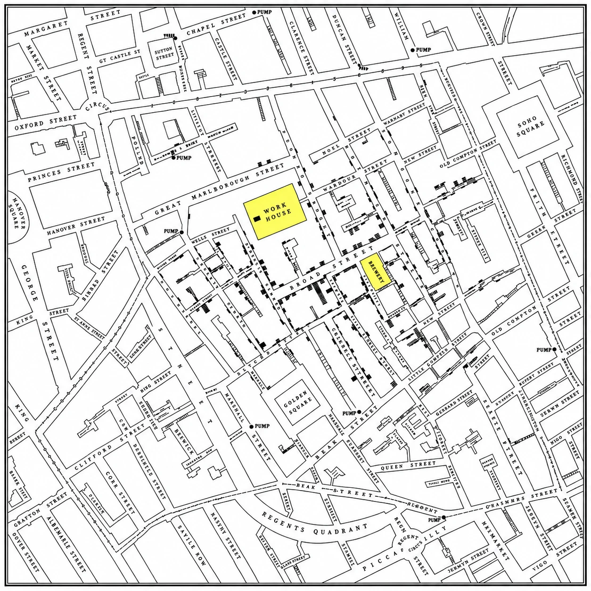
처음 볼 때 할 일은 딱 하나다. 검은 것이 어디에 몰려 있는지만 보면 된다. 지도 한가운데가 눈에 띄게 검고, 가장자리로 갈수록 하얗다.
2. 쓰인 기호는 두 가지뿐
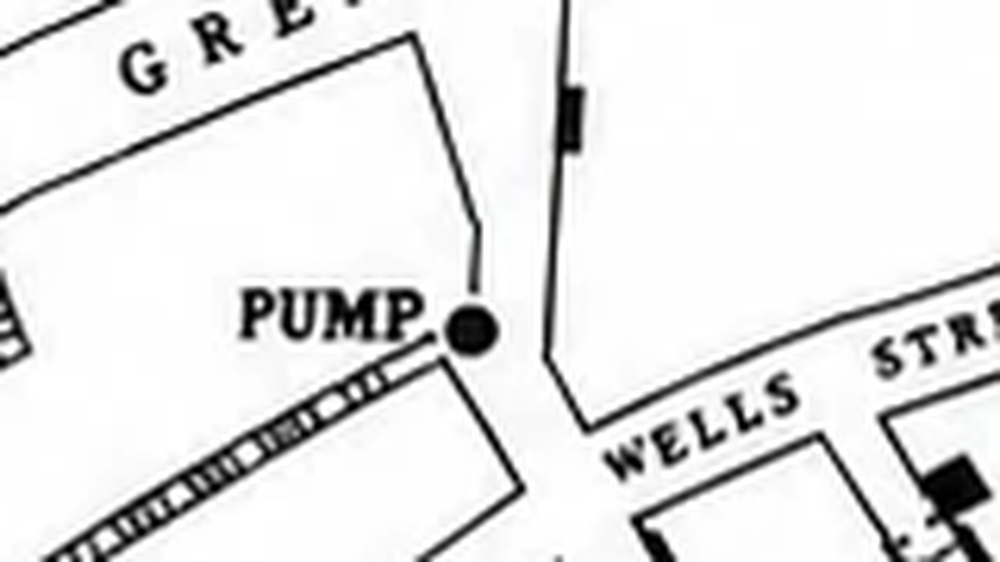
이 지도가 쓰는 기호는 두 가지가 전부다.
- 검은 막대 — 콜레라로 죽은 사람. 죽은 사람이 살던 집 앞에 막대를 하나씩 그렸다.
- ● 펌프 — 동네 공동 물펌프(수도가 집집마다 없던 시절, 동네 사람들이 양동이를 들고 와서 물을 받아 가던 곳). 영어 원본에는 옆에 PUMP라고 적혀 있다.
그 밖에는 거리 이름과 건물 테두리뿐이다. 꾸밈이 하나도 없다. 터프티가 말하는 "보는 사람의 눈을 데이터에만 모으는 디자인"이 이런 것이다.
3. 막대 읽는 법
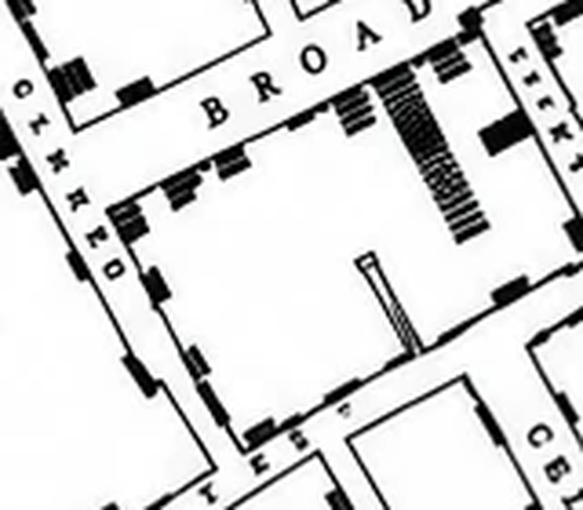
이 방식 덕분에 막대 더미가 두꺼울수록 그 집에서 많이 죽었다는 뜻이 된다. 숫자를 하나도 쓰지 않고 양을 보여주는 장치다.
4. 중심부 — 가장 검은 곳
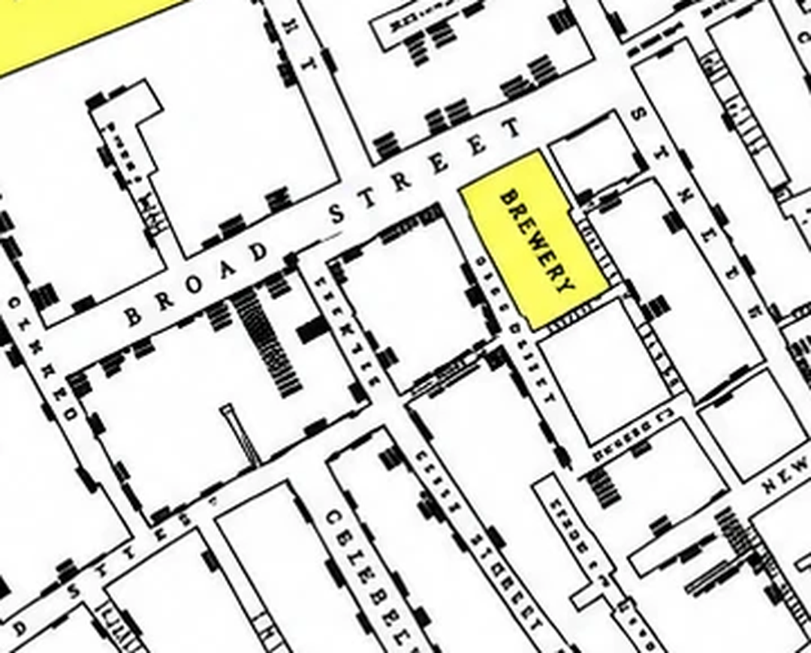
5. 문제의 펌프 자리
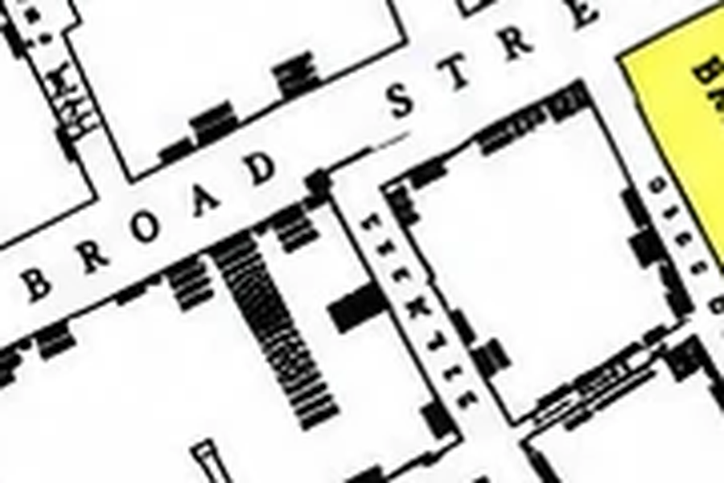
재미있는 점 — 정작 범인에게는 이름표가 없다
다른 펌프 옆에는 PUMP라는 글자가 또박또박 적혀 있다(그림 2를 보라). 그런데 브로드 스트리트 펌프 옆에는 그 글자가 없다. 검은 막대가 가장 빽빽한 바로 그 자리에, 점 하나로 조용히 찍혀 있을 뿐이다.
그래서 터프티는 책에서 위치를 글로 짚어 준다 — "펌프는 지도 한가운데, BROAD STREET이라고 쓴 글자의 D 바로 오른쪽에 있다." 그림만 봐서는 못 찾기 때문이다.
이름표가 붙은 펌프들은 결국 죄가 없었고, 이름표 없는 한 곳이 범인이었다. 발표에서 짚어 주면 좋은 대목이다.
그럼 스노가 일부러 뺀 걸까? — 아니다
오히려 반대다. 스노는 이 펌프를 고발하려고 이 지도를 그렸다. 9월 7일에는 직접 위원회를 찾아가 "저 펌프 손잡이를 떼라"고 요구까지 했다. 숨길 이유가 없다.
빠진 것은 "PUMP"라는 글자 하나뿐이다. 정작 중요한 것은 다 들어가 있다 —
| 사망자 막대 | 다 그려져 있다. 지도에서 가장 새까만 곳이 바로 거기다 |
| 펌프 자리 | 점(●)은 찍혀 있다 |
| PUMP라는 글자 | 이것만 없다 |
가장 그럴듯한 이유는 자리가 없어서다. 다른 펌프들(그림 2)은 텅 빈 하얀 공간 한가운데 있어서 글자를 쓸 자리가 넉넉하다. 그런데 브로드 스트리트 펌프 둘레는 막대가 빗살처럼 빽빽하게 쌓인 자리다. 거기에 PUMP라고 쓰면 사망자 표시를 덮어 버린다.
※ 다만 이건 추측이다. 스노가 왜 그랬는지 적어 둔 기록은 없다. 발표에서는 "아마 자리가 없어서였을 것" 정도로 말하는 편이 안전하다.
숫자 주의 — "8곳"은 펌프 개수가 아니다
8은 그림에 PUMP라고 글씨가 적힌 자리의 수이지, 그 동네에 펌프가 8개뿐이었다는 뜻이 아니다. 실제로는 더 많았다. 스노 본인이 책에 13곳이라고 썼다.
| 실제로 있던 펌프 | 13곳 — 스노가 책에 쓴 숫자 |
| 우리 그림에 PUMP라고 적힌 자리 | 8곳 |
| 브로드 스트리트 펌프 | 글씨 없음 — 점 하나뿐 (범인) |
숫자가 안 맞는 이유는 같은 지도가 여러 번 다시 인쇄되고 다시 그려졌기 때문이다. 터프티 1권 24쪽에 실린 것은 1958년에 한 지리학자가 다시 그린 판이라 펌프를 × 표로 찍었고 11곳이 나온다. 우리가 쓰는 3권 31쪽 판은 ● 옆에 PUMP라고 글씨를 적었다. 판마다 표시 방법도, 세어지는 개수도 다르다.
발표에서는 이렇게 말한다 —
"이 지도에 PUMP라고 적힌 곳은 8군데인데, 정작 범인 펌프에는 그 글씨가 없습니다."
"펌프가 8개였다"고 말하면 틀린 말이 된다.
6. 구빈원 — 535명 중 5명
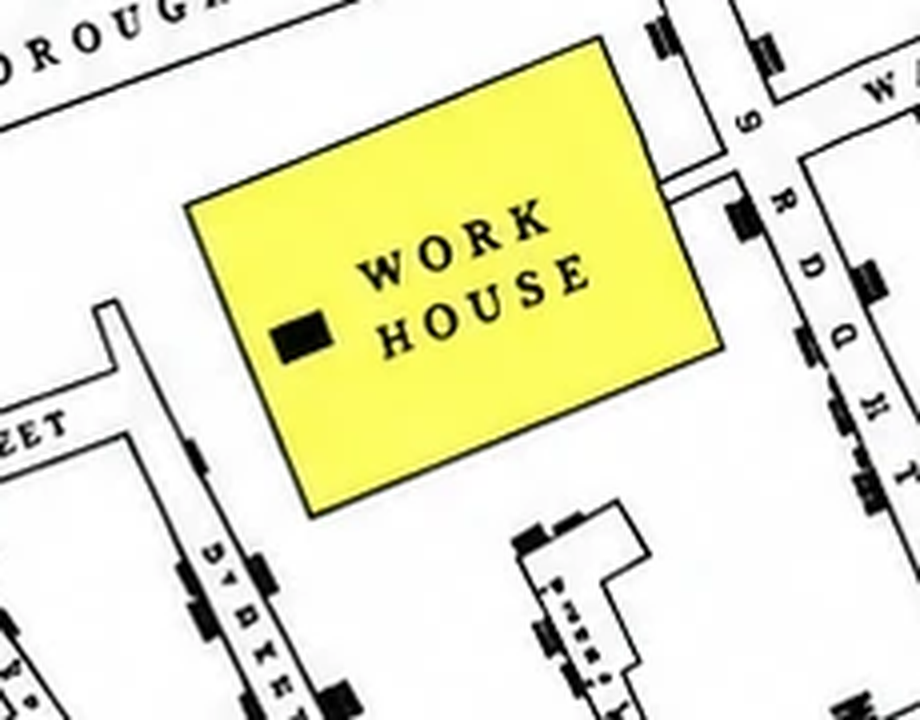
구빈원(救貧院)은 갈 곳 없는 가난한 사람을 나라에서 모아 재워 주고 먹여 주던 시설이다. 좁은 건물에 수백 명이 함께 지냈으니, 병이 돌면 가장 위험한 곳이어야 한다.
7. 양조장 — 70명 중 0명
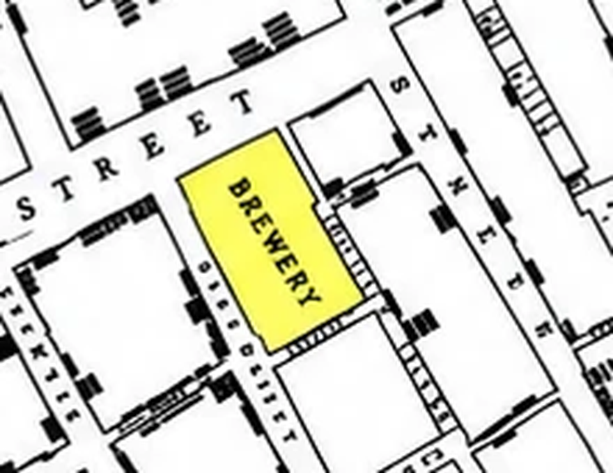
양조장(釀造場)은 술 만드는 공장이다. 펌프에서 걸어서 1분 거리, 가장 위험한 자리에 있다.
맥주를 마셔서 살아남았다. 발표에서 가장 반응이 좋을 대목이다.
잠깐 — 이거 오히려 반대 증거 아닌가?
여기서 한 번 걸린다. 방금 "이 펌프가 범인"이라고 해 놓고, 정작 그 펌프에서 가장 가까운 두 건물이 멀쩡하다. 펌프 코앞에 605명이 있었는데 죽은 사람은 5명뿐이다. 말이 안 맞아 보인다.
그런데 두 곳의 공통점을 보자.
| 펌프까지 | 무엇을 마셨나 | 결과 | |
|---|---|---|---|
| 구빈원 | 걸어서 1분 | 구내 자기 우물 | 535명 중 5명 |
| 양조장 | 걸어서 1분 | 맥아주 + 깊은 자체 우물 | 70명 중 0명 |
| 주변 집들 | 걸어서 1~2분 | 브로드 스트리트 펌프 물 | 집집마다 사망 |
셋 다 펌프까지 거리는 똑같다. 다른 건 마신 물 하나뿐이다.
그래서 기준이 바뀐다. "펌프에서 가까우면 죽는다"가 아니라 "그 펌프 물을 마시면 죽는다"였던 것이다. 기준을 이렇게 바꾸는 순간, 안 죽은 사람들이 가장 강한 증거가 된다 — 같은 자리에 있었는데 그 물만 안 마셨더니 살았으니까.
8. 한산한 곳들 — 비교 대상
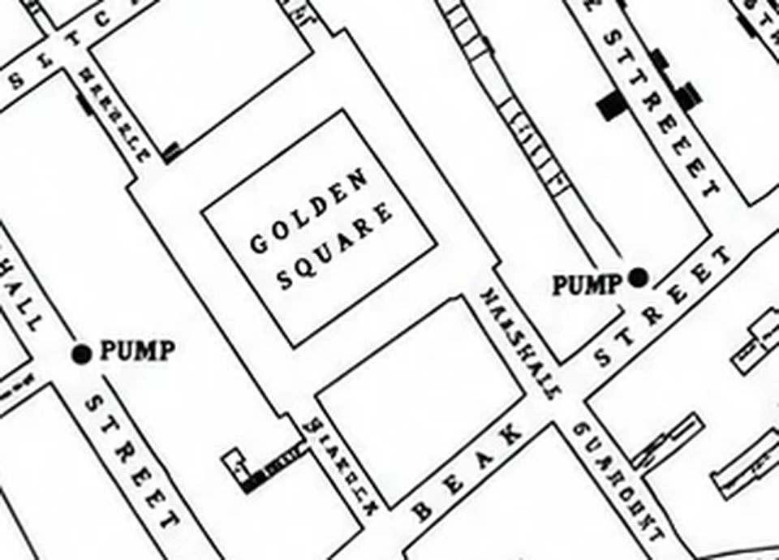
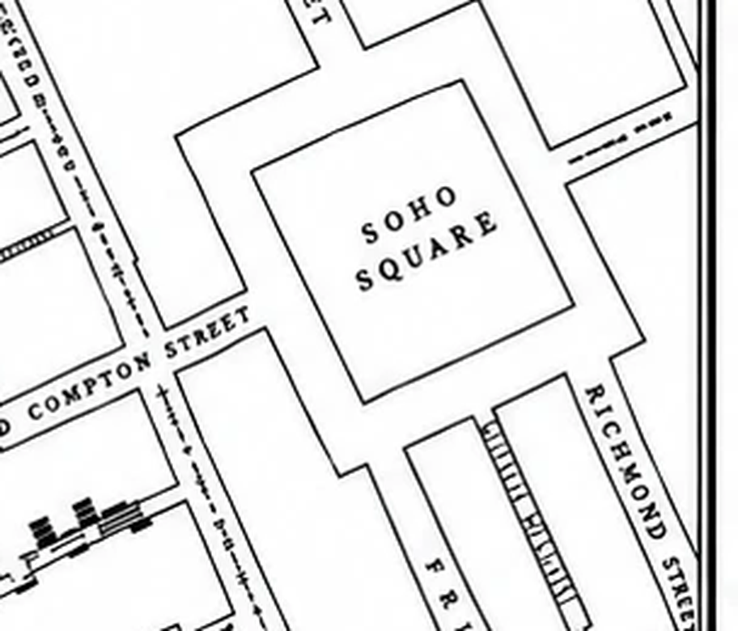
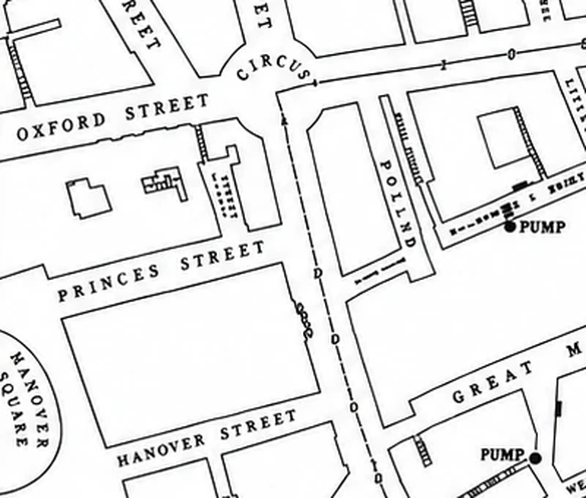
이 세 장이 중요한 이유는 비교 대상이기 때문이다. 검은 곳만 보면 "콜레라가 심했구나"로 끝난다. 하얀 곳과 나란히 놓고 봐야 "왜 여기만 이렇지?"라는 질문이 생긴다.
Ⅳ그래서 범인은?
어긋나 보이던 조각들을 하나로 잇는다
숫자로 보는 증거
심하게 앓은 사람
지내던 사람
(보통이면 100명 넘었을 것)
죽은 사람만 조사하면 답이 안 나온다. 안 죽은 사람을 같이 봐야 한다. 지도는 산 사람과 죽은 사람을 한 화면에서 비교할 수 있게 해 주었다.
멀리 살았는데 죽은 사람들
앞에서는 가까운데 안 죽은 사람을 봤다. 이번엔 반대다 — 그 펌프와 아무 상관없어 보이는 먼 곳의 죽음이다. 자기 주장에 불리한 사례였지만, 스노는 숨기지 않고 하나씩 직접 찾아가 물었다. "이 사람은 무슨 물을 마셨나?"
- 노엘 스트리트의 가구 만드는 사람 — 집은 멀지만 낮에는 브로드 스트리트에서 일했다
- 멀리 떨어진 골목에서 죽은 아이 둘 — 브로드 스트리트에 있는 학교에 다니면서 그 펌프 물을 마셨다
가장 결정적인 사례 — 물을 배달시켜 마신 부인
웨스트엔드에 살던 59세 부인은 여러 달 동안 브로드 스트리트 근처에 간 적이 없었다. 그런데 그 펌프 물맛을 좋아해 매일 다니는 수레 편에 큰 병으로 배달시켜 마셨다.
8월 31일 목요일 물을 길어 보냈고, 그날 저녁과 금요일에 마셨다. 금요일 저녁에 앓기 시작해 토요일에 죽었다. 방문 중이던 조카딸도 그 물을 마셨고, 자기 집으로 돌아가 그곳에서 죽었다. 두 동네 모두 그때 콜레라가 전혀 없던 곳이었다.
언뜻 보면 이 죽음은 펌프와 아무 상관없어 보인다. 그런데 조사해 보니 펌프 물만 마시고 죽은 셈이 됐다. 불리해 보이던 사례가 가장 강력한 증거로 뒤집힌 것이다.
터프티는 이 태도를 높이 평가한다 — "목적은 옳은 답을 찾는 것이지, 논쟁에서 이기는 것이 아니다." 그리고 스노가 이 사례를 실제로 찾아낸 동료 의사(프레이저 박사)에게 공을 돌린 점도 칭찬한다.
네 줄로 이으면 — 그래서 범인은?
지금까지 나온 조각이 넷이다. 따로 보면 어긋나지만, 순서대로 이으면 한 곳을 가리킨다.
- 가까운데 죽었다펌프 둘레 집집마다 막대가 쌓였다. 사망자 578명 중 358명(62%)이 이 펌프가 가장 가까웠고, 89%가 200m 안에 있었다.
- 가까운데 안 죽었다구빈원 535명 중 5명, 양조장 70명 중 0명. 두 곳 다 그 펌프 물을 안 마셨다.
- 멀리서 죽었다노엘 스트리트의 목수, 먼 골목의 아이 둘, 지도 밖의 59세 부인. 셋 다 어떻게든 그 펌프 물을 마셨다.
- 따라서죽고 사는 것을 가른 것은 거리도, 공기도 아니었다. 오직 "브로드 스트리트 펌프 물을 마셨느냐"였다.
| 이 기준으로 보면 | 가까운데 안 죽은 두 곳 | 멀리서 죽은 사람들 |
|---|---|---|
| "펌프에 가까우면 죽는다" |
설명 안 됨 ✕ | 설명 안 됨 ✕ |
| "그 펌프 물을 마시면 죽는다" |
안 마셨으니 산 것 ○ | 마셨으니 죽은 것 ○ |
| "나쁜 공기 때문이다" (독기설) |
같은 공기를 마셨는데 왜 안 죽었나 ✕ |
그 동네 공기를 쐰 적도 없는데 왜 죽었나 ✕ |
한 가지 설명만 네 조각을 전부 맞춘다. 이게 스노가 지도로 해낸 일이다.
그래서 어떻게 됐나
범인을 찾았으니, 이제 어떻게 했고 그래서 세상이 어떻게 바뀌었는지가 남는다. 세 단계로 이어진다.
① 당장 한 일 — 손잡이를 뗐다
1854년 9월 7일 저녁, 스노는 교구위원회(동네 일을 결정하던 주민 대표 모임)를 찾아가 지도를 펼쳐 보이고 "저 펌프 손잡이를 떼어 달라"고 했다. 다음 날 손잡이가 떼어졌고, 유행은 끝났다. 보통 이야기는 여기서 끝난다 — 그런데 사실은 조금 다르다.
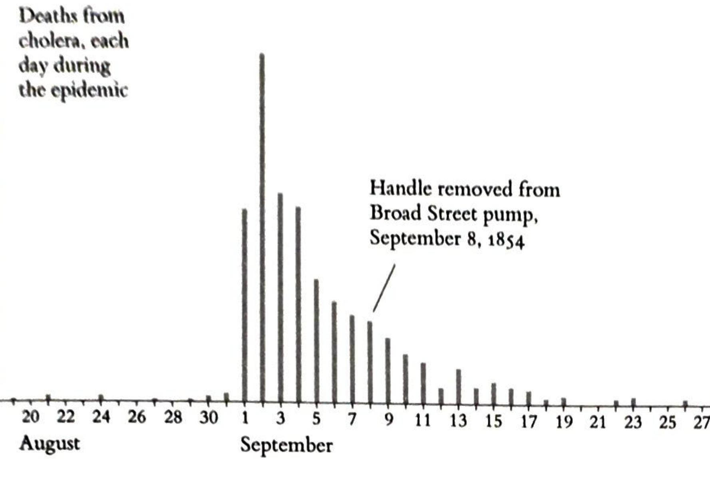
터프티는 이 그래프를 들어 지적한다 — "스노의 업적에서 가장 유명한 부분이 그의 증거 중 가장 불확실한 부분이기도 하다."
- 많은 주민이 이미 동네를 떠나 버렸다
- 걸릴 사람이 이미 다 걸려서 남아 있지 않았다
- 요즘 역학자(병이 어떻게 퍼지는지 연구하는 사람)들도 "손잡이를 떼서 끝났다"는 말에는 고개를 갸웃한다
그러니 손잡이는 이 이야기의 결말이 아니다. 진짜 결말은 그다음에 있다.
② 바로는 안 믿어 줬다
솔직히 말하면 스노는 살아서 인정받지 못했다. 이듬해인 1855년, 정부가 꾸린 조사위원회는 스노의 물 이야기를 받아들이지 않고 여전히 "나쁜 공기 탓"이라고 결론 내렸다. 눈에 보이지도 않는 것이 물에 들어 있다는 말이, 그때로서는 너무 이상했던 것이다. 스노는 1858년에 45세로 죽었다.
③ 그런데 결국 스노가 맞았다
- 1858년 여름 — 템스강이 썩어 의회가 문을 닫을 지경이 되자, 런던은 마침내 하수도를 새로 깔기 시작했다(1859년 착공). 똥물과 마실 물을 떼어 놓은 것이다.
- 1866년 — 런던의 마지막 큰 콜레라 유행. 하필 물을 제대로 거르지 않고 공급하던 회사의 구역에서만 터졌다. 스노의 말이 다시 한번 맞아떨어졌다.
- 1884년 — 로베르트 코흐가 콜레라균을 현미경으로 찾아냈다. 스노가 "물에 뭔가 있다"고 한 지 30년 만에, 그 "뭔가"의 정체가 밝혀진 것이다.
오늘날 존 스노는 역학의 아버지로 불린다. "어디서, 누가, 무엇을 했길래 병에 걸렸나"를 자료로 따져 원인을 찾는 방식 — 코로나 때 우리가 매일 보던 그 방식이 여기서 시작됐다.
Ⅴ정리
이 지도가 좋은 데이터 시각화인 이유 — 세 가지
| 원칙 | 이 지도에서 | |
|---|---|---|
| 1 | 축을 바꿨다 | "며칠에 몇 명"을 세는 대신 "어디서 죽었나"를 지도에 찍자, 원인(펌프)과 결과(죽음)가 한 그림에 들어왔다 |
| 2 | 비교를 넣었다 | 죽은 사람 옆에 안 죽은 사람(구빈원·양조장·한산한 동네)을 같이 놓았다 |
| 3 | 불리한 사례를 숨기지 않았다 | 자기 주장과 안 맞아 보이는 죽음을 스스로 먼저 찾아내 하나씩 설명했다 |
한 문장으로 정리하면: 점 하나가 사람 한 명이었기에, 그 뭉침이 증거가 되었다.
응용 — 같은 방법을 서울에 써 봤다
배운 것을 그대로 따라 해 보는 것이 가장 확실한 확인이다. 스노의 방법 — 사건 하나를 자국 하나로 찍고, 안 일어난 곳과 나란히 놓고 보기 — 을 2012~2024년 서울의 보행·자전거 사고 다발지점 3,743곳에 적용해 봤다.
무엇을 그대로 가져왔나
| 스노가 한 것 | 서울판에서 |
|---|---|
| 죽은 사람 집 앞에 막대 하나 | 사고가 잦았던 자리에 점 하나, 크기는 사고 건수 |
| 막대를 길에 직각으로 쌓음 | 길 정보가 없어, 가까운 사고점 10곳의 주된 방향을 그 자리의 길 방향으로 추정해 같은 방식으로 쌓음 |
| 안 죽은 곳을 같이 놓음 (구빈원·양조장) |
사고가 없는 구를 같이 놓음 — 동대문구 126곳 ↔ 광진구 19곳 |
| 불리한 사례를 숨기지 않음 | 결론에 안 맞는 유형을 그대로 보여줌 (아래) |
결과 — 그리고 걸린 지점
보행노인 사고는 동대문구가 126곳으로 1위, 광진구가 19곳으로 꼴찌다. 7배 차이. 찾아보니 청량리·경동시장 일대였다 — 어르신이 모이는 전통시장에 기차역·지하철·버스환승센터가 겹친 자리. 실제로 서울시는 그곳을 전국 최초로 전통시장 노인보호구역으로 지정했고, 보행로와 안전펜스를 깐 뒤 사고가 크게 줄었다. "손잡이를 뗀" 자리가 서울에도 있었던 셈이다.
여기서 끝냈으면 "가난한 동네가 위험하다"로 결론 났을 것이다. 그래서 집값을 겹쳐 봤다.
| 누가 다치나 | 집값과의 상관 | 뜻 |
|---|---|---|
| 보행노인 | −0.50 | 비싼 구일수록 뚜렷하게 적다 |
| 자전거 | −0.14 | 관계가 거의 없다 — 송파구가 1위다 |
| 보행어린이 | −0.27 | 약함 |
| 스쿨존어린이 | −0.30 | 약함 |
"비싼 동네가 안전하다"는 말은 누가 다치느냐에 따라 맞기도 하고 틀리기도 한다. 한 장만 보고 결론 내렸으면 틀릴 뻔했다 — 터프티의 "무엇과 비교하는가"가 170년 뒤 서울에서도 똑같이 작동한 셈이다.
다만 — 이 응용판이 말할 수 없는 것
상관은 인과가 아니다. 집값이 사고를 줄이는 게 아니라, 비싼 동네의 다른 조건 (넓은 보도, 격자형 도로, 인구 구성)이 작용했을 수 있다. 구 평균으로 개인을 말해서도 안 된다(생태학적 오류). 집값은 2025년, 사고는 2012~2024년이라 시점도 다르다.
스노도 지도를 그린 뒤 집집마다 찾아가 물었다. 지도는 질문을 만들지, 답을 주지 않는다.
참고자료
- Edward Tufte, Visual Explanations: Images and Quantities, Evidence and Narrative, Graphics Press, 1997 — 2장 「시각적·통계적 사고」, 특히 30~35쪽. 지도 도판은 31쪽.
- Edward Tufte, The Visual Display of Quantitative Information, 2판, Graphics Press, 2001 — 24쪽에 같은 지도를 길버트가 다시 그린 판이 실려 있다.
- John Snow, On the Mode of Communication of Cholera, London, 1855 — 양조장·구빈원 이야기가 처음 나오는 곳(42쪽), 반대 사례(44~45, 47쪽).
- E. W. Gilbert, "Pioneer Maps of Health and Disease in England," Geographical Journal 124 (1958), 172~183 — 1권에 실린 "다시 그린 지도"의 출처.
- Benjamin W. Richardson, 「존 스노의 생애」(1858) — 펌프 손잡이 장면의 극적 서술.
- [응용판 자료] 공공데이터포털 「전국교통사고다발지역표준데이터」(기준일 2025-09-24) 중 서울 3,743곳 · 국토교통부 실거래가 공개시스템, 서울 아파트 매매 7만 7,365건(2025년) · 자치구 경계는 통계청 2013년 행정구역.